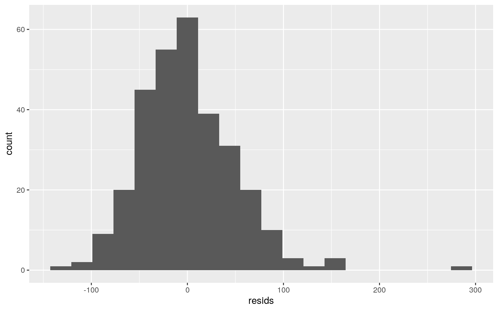
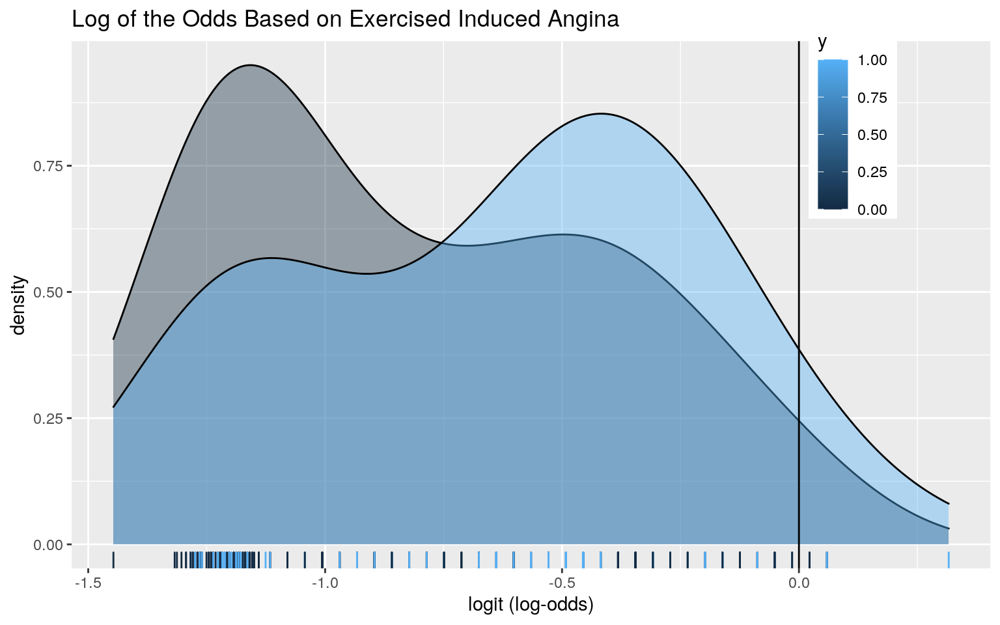

library(tidyverse)
heart <- read.csv("heart.csv")
dim(heart)## [1] 303 14df=subset(heart, select = -c(slp, caa, output, thall))
dim(df)## [1] 303 10The dataset that I have chosen is the heart health condition of a subset of patients. The variables are age, sex, cp, trtbps, chol, fbs, restecg, thalachh, exng, and oldpeak. The age represents the age of the patient, the gender represents either 1 or 0, cp represents the chest pain (1=typical angina, 2=atypical angina, 3=non-anginal pain, and 4=asymptomatic), trtbps represents the resting blood pressure in mmHg, chol represents the cholesterol level in mg/dl, fbs represents fasting blood pressure (whether it is over 120 mg/dl, 1= true, 0=false), restecg represents resting electrocardiograph result (0=normal, 1= abnormal ST-T wave abnormality, 2= showing left ventricle hypertrophy), thalachh represents maximum heart rate achieved, exng represents the exercised induced angina (1=True, 0=False), and the oldpeak represents the previous peak. The number of variables is 14 and the number of observations is 303. There were 4 columns with no explanation for what the variables meant, therefore I took them out and reduced the number of variables to 10 instead of 14, the number of observations stayed the same. For reference an angina is a reduced flow of blood to the heart that causes pain and is a symptom of coronary heart disease and an risk factor for heart attacks.
#MANOVA
man1 <- manova(cbind(thalachh, chol, trtbps, age)~cp, data=df)
summary(man1)## Df Pillai approx F num Df den Df Pr(>F)
## cp 1 0.1011 8.3787 4 298 2.038e-06 ***
## Residuals 301
## ---
## Signif. codes: 0 '***' 0.001 '**' 0.01 '*' 0.05 '.' 0.1
' ' 1summary.aov(man1)## Response thalachh :
## Df Sum Sq Mean Sq F value Pr(>F)
## cp 1 13860 13859.9 28.854 1.564e-07 ***
## Residuals 301 144583 480.3
## ---
## Signif. codes: 0 '***' 0.001 '**' 0.01 '*' 0.05 '.' 0.1
' ' 1
##
## Response chol :
## Df Sum Sq Mean Sq F value Pr(>F)
## cp 1 4798 4798.3 1.7908 0.1818
## Residuals 301 806503 2679.4
##
## Response trtbps :
## Df Sum Sq Mean Sq F value Pr(>F)
## cp 1 211 210.54 0.6838 0.4089
## Residuals 301 92681 307.91
##
## Response age :
## Df Sum Sq Mean Sq F value Pr(>F)
## cp 1 117.4 117.408 1.4254 0.2335
## Residuals 301 24792.9 82.369df%>%group_by(cp)%>%summarize(mean(chol),mean(thalachh), mean(trtbps), mean(age))## # A tibble: 4 x 5
## cp `mean(chol)` `mean(thalachh)` `mean(trtbps)`
`mean(age)`
## <int> <dbl> <dbl> <dbl> <dbl>
## 1 0 250. 141. 132. 55.7
## 2 1 245. 162. 128. 51.4
## 3 2 243. 156. 130. 53.5
## 4 3 237. 156. 141. 55.9#ANOVA
summary(aov(thalachh~cp,data=df))## Df Sum Sq Mean Sq F value Pr(>F)
## cp 1 13860 13860 28.85 1.56e-07 ***
## Residuals 301 144583 480
## ---
## Signif. codes: 0 '***' 0.001 '**' 0.01 '*' 0.05 '.' 0.1
' ' 1summary(aov(chol~cp,data=df))## Df Sum Sq Mean Sq F value Pr(>F)
## cp 1 4798 4798 1.791 0.182
## Residuals 301 806503 2679summary(aov(trtbps~cp,data=df))## Df Sum Sq Mean Sq F value Pr(>F)
## cp 1 211 210.5 0.684 0.409
## Residuals 301 92681 307.9summary(aov(age~cp,data=df))## Df Sum Sq Mean Sq F value Pr(>F)
## cp 1 117 117.41 1.425 0.233
## Residuals 301 24793 82.37#post-hoc pairwise t.test
pairwise.t.test(df$thalachh,df$cp, p.adj="none")##
## Pairwise comparisons using t tests with pooled SD
##
## data: df$thalachh and df$cp
##
## 0 1 2
## 1 1.2e-09 - -
## 2 3.2e-07 0.0713 -
## 3 0.0013 0.2273 0.9443
##
## P value adjustment method: none#Type I Error
1-.95^11## [1] 0.43119991-.95^29## [1] 0.7740645#Adjusted pairwise t-test
pairwise.t.test(df$thalachh,df$cp, p.adj='bonf')##
## Pairwise comparisons using t tests with pooled SD
##
## data: df$thalachh and df$cp
##
## 0 1 2
## 1 7.1e-09 - -
## 2 1.9e-06 0.4277 -
## 3 0.0081 1.0000 1.0000
##
## P value adjustment method: bonferroniThe null hypothesis for the MANOVA test is that the means for all of the variables are equal. Looking a the p-value for the MANOVA there is at least one variable is significant from thalachh, chol, trtbps, age based on chest pain because the p-value is 2.038e-06. I chose to test the thalachh variable because it would seem that the harder your heart works, the more likely anginal pain is. I chose cholesterol because as cholesterol increases it decreases heart health. I chose trtbps because it would seem that the higher the blood pressure is, the less likely that anginal pain will be experienced. Lastly, I chose the age variable because the heart gets weaker as people age.Then ANOVA tests were performed. The null hypothesis for ANOVA tests is that there is no difference in means.The alternative hypothesis is that there was variance in the means. The only variable that ended up being significant was thalachh, maximum heart rate achieved, with a p-value of 1.56e-07. This means that we reject the null for the thalachh variable. The t.tests were then performed on the thalachh variable in order to see which group of chest pain they differed on. The conditions of chest pain that differed on the maximum heart rate achieved were 0 and 1, 0 and 2, and 0 and 3. The number of tests that were performed was 11, meaning that there was a 0.4311999 ( 43.11999%) chance of Type I error. If all of the variables tested were significant, then 29 tests would have been performed and this would have cause the chance that Type I error occurred to increase to 0.7740645. Then the bonferroni correction was used and it was found that the differing in chest pain in groups 3 and 0 was no longer significant and the other two remained significant. The mean in thalachh for group 0 was 140.5385, and in group 1 162.4200, and in group 2 it was 155.6092. MANOVA assumptions are that there is a random sample and independent observations, there is multivariate normality, there is homogeneity of within-group covariance matrices, there is a linear relationships among DVs, there are no extreme univariate or multivariate outliers, and there should be no multicollinearity. These assumptions are not likely to have been met because this dataset was gotten from one group of people from one hospital, therefore this is not a true random sample, as well as it is probable that these variables that are being analyzed are related to each other because they are all closely related to whether someone will have a heart attack or not. In short, the assumptions are not met.
set.seed(348)
df%>%group_by(fbs)%>%summarize(means=mean(chol))%>%summarize(diff(means))## # A tibble: 1 x 1
## `diff(means)`
## <dbl>
## 1 1.93rand_dist<-vector()
for(i in 1:5000){
new<-data.frame(chole=sample(df$chol),condition=df$fbs)
rand_dist[i]<-mean(new[new$condition=="0",]$chole)-
mean(new[new$condition=="1",]$chole)
}
mean(rand_dist< -1.934367 | rand_dist> 1.934367 )## [1] 0.8144{hist(rand_dist,main="null distribution",ylab="y"); abline(v = c(-1.934367, 1.934367),col="red")}For this part I did a randomization test to see if there was a significant difference between the groups of patients with fasting blood pressures of either less than or greater than 120 mg/dl based on the means of the cholesterol. I chose these two variables because cholesterol is known to increase blood pressure. The null hypothesis is that there is no variance in the means of cholesterol among the groups. The alternate hypothesis is that there is a variance between the groups mean cholesterol. From the results it was found that there was a p-value of 0.8144 which means that we fail to reject the null hypothesis. The mean difference that was found when not randomized was 1.934367 between the groups that had <120 mg/dl and >120mg/dl. This result could have been due to the small sample size and if further observations were conducted the outcome of this test might be different.
df2<-df %>% mutate(trtbps_c=trtbps - mean(trtbps,na.rm=T))
df3<-df2 %>% mutate(age_c=age - mean(age,na.rm=T))
df4<-df3%>%mutate(cp=recode(cp,"0"="Angina", "1"="Typical", "2"="Non-Anginal", "3"="Asymptomatic"))
coef(lm(chol~age_c*cp,data=df4))## (Intercept) age_c cpAsymptomatic cpNon-Anginal
## 249.47060923 0.49945125 -13.64844607 -4.53638801
## cpTypical age_c:cpAsymptomatic age_c:cpNon-Anginal
age_c:cpTypical
## -0.04977133 0.37085659 1.57547194 1.04423413summary(lm(chol~age_c*cp,data=df4))##
## Call:
## lm(formula = chol ~ age_c * cp, data = df4)
##
## Residuals:
## Min 1Q Median 3Q Max
## -124.40 -33.25 -4.29 29.39 292.85
##
## Coefficients:
## Estimate Std. Error t value Pr(>|t|)
## (Intercept) 249.47061 4.29502 58.084 <2e-16 ***
## age_c 0.49945 0.51198 0.976 0.3301
## cpAsymptomatic -13.64845 11.52821 -1.184 0.2374
## cpNon-Anginal -4.53639 6.94650 -0.653 0.5142
## cpTypical -0.04977 8.66784 -0.006 0.9954
## age_c:cpAsymptomatic 0.37086 1.19311 0.311 0.7561
## age_c:cpNon-Anginal 1.57547 0.77404 2.035 0.0427 *
## age_c:cpTypical 1.04423 0.91775 1.138 0.2561
## ---
## Signif. codes: 0 '***' 0.001 '**' 0.01 '*' 0.05 '.' 0.1
' ' 1
##
## Residual standard error: 50.72 on 295 degrees of freedom
## Multiple R-squared: 0.06477, Adjusted R-squared: 0.04258
## F-statistic: 2.919 on 7 and 295 DF, p-value: 0.005745df4 %>% select(chol, age, cp) %>% ggplot(aes(age, chol, color=cp)) +
geom_point()+geom_smooth(method="lm") + geom_vline(xintercept=mean(df4$age,na.rm=T),lty=2)The linear regression was run using the variables of age and cp on chol. The intercept would be the group of people that experience chest pain due to Angina. For every 1-unit increase in Angina group cholesterol, it is predicted that age goes up by 0.49945 years for this group. Patients in the Asymptomatic group with zero age have predicted cholesterol that is -13.64845 lower than Angina group with zero age. Patients in the Non-Anginal group with zero age have predicted cholesterol that is -4.53639 lower than Angina group with zero age. Patients in the Typical group with zero age have predicted cholesterol that is -0.04977 lower than Angina group with zero age. Slope of Asymptomatic group on cholesterol for age is 0.37086 greater than for Angina group. Slope of Non-Anginal group on cholesterol for age is 1.57547 greater than for Angina group. Slope of Typical group on cholesterol for age is 1.04423 greater than for Angina group. The mean predicted cholesterol for Anginal group was 249.47061. The amount of variation that is explained is 0.06477 or 6.477% of the variatin. This was found to be the R squared value.
ggplot(df4,aes(chol,age,color=cp))+geom_point()resids<-lm(chol~age_c*cp, data=df4)$residuals
fitted<-lm(chol~age_c*cp, data=df4)$fitted.values
ggplot()+geom_point(aes(fitted,resids))ggplot()+geom_histogram(aes(resids), bins=20) From the first two graph it is clear that there is not a fanning out pattern so this means that there is no heteroskedasticity. Also from the graph it can be seen that there is some linearity. For the most part the distribution looks fairly normal with exception of one outlier on the right.
library(sandwich); library(lmtest)
moo<-lm(chol~age_c*cp,data=df4)
summary(moo)##
## Call:
## lm(formula = chol ~ age_c * cp, data = df4)
##
## Residuals:
## Min 1Q Median 3Q Max
## -124.40 -33.25 -4.29 29.39 292.85
##
## Coefficients:
## Estimate Std. Error t value Pr(>|t|)
## (Intercept) 249.47061 4.29502 58.084 <2e-16 ***
## age_c 0.49945 0.51198 0.976 0.3301
## cpAsymptomatic -13.64845 11.52821 -1.184 0.2374
## cpNon-Anginal -4.53639 6.94650 -0.653 0.5142
## cpTypical -0.04977 8.66784 -0.006 0.9954
## age_c:cpAsymptomatic 0.37086 1.19311 0.311 0.7561
## age_c:cpNon-Anginal 1.57547 0.77404 2.035 0.0427 *
## age_c:cpTypical 1.04423 0.91775 1.138 0.2561
## ---
## Signif. codes: 0 '***' 0.001 '**' 0.01 '*' 0.05 '.' 0.1
' ' 1
##
## Residual standard error: 50.72 on 295 degrees of freedom
## Multiple R-squared: 0.06477, Adjusted R-squared: 0.04258
## F-statistic: 2.919 on 7 and 295 DF, p-value: 0.005745coeftest(moo, vcov = vcovHC(moo))##
## t test of coefficients:
##
## Estimate Std. Error t value Pr(>|t|)
## (Intercept) 249.470609 4.301851 57.9915 <2e-16 ***
## age_c 0.499451 0.534547 0.9343 0.3509
## cpAsymptomatic -13.648446 8.683035 -1.5719 0.1171
## cpNon-Anginal -4.536388 7.898971 -0.5743 0.5662
## cpTypical -0.049771 7.396430 -0.0067 0.9946
## age_c:cpAsymptomatic 0.370857 0.859986 0.4312 0.6666
## age_c:cpNon-Anginal 1.575472 0.965010 1.6326 0.1036
## age_c:cpTypical 1.044234 0.752255 1.3881 0.1661
## ---
## Signif. codes: 0 '***' 0.001 '**' 0.01 '*' 0.05 '.' 0.1
' ' 1With the robust test it was found that the only significant effect was that of the interaction between age and Non-Anginal group patients. The null hypothesis was that there is equal variance between the points of Non-Anginal and Anginal. This null hypothesis is rejected. There were no changes in significance between the robust test and the test performed previously. Every other group had a non-significant p-value as well as the their interactions with age and the different groups were found to be insignificant.
samp_distn<-replicate(5000, {
boot_dat <- sample_frac(df4, replace=T)
fit <- lm(chol~age_c+cp, data=boot_dat)
coef(fit)
})
samp_distn %>% t %>% as.data.frame %>% summarize_all(sd)## (Intercept) age_c cpAsymptomatic cpNon-Anginal cpTypical
## 1 4.321364 0.344384 8.108895 7.853949 7.254615The SE for the Asymptomatic group was found to be 8.172967 which was less than the robust and the original SEs (11.52821), meaning that the p-value also decreased. The SE for the Non-Anginal group was found to be larger than the SE from the robust and the original, meaning that the p-value increased. The SE for the Typical group decreased slightly from the robust and the original, meaning that the p-value decreased. The standard error for the Aginal group increased compared to the robust and original, meaning that the p-value would have increased. The age standard error decreased compared to the robust and original, meaning that the p-value would have decreased.
df6<-df4%>%mutate(y=ifelse(exng=="1",1,0))
head(data)##
## 1 function (..., list = character(), package = NULL,
lib.loc = NULL,
## 2 verbose = getOption("verbose"), envir = .GlobalEnv,
overwrite = TRUE)
## 3 {
## 4 fileExt <- function(x) {
## 5 db <- grepl("\\\\.[^.]+\\\\.(gz|bz2|xz)$", x)
## 6 ans <- sub(".*\\\\.", "", x)fitlog<-glm(y~age*sex, data=df6, family="binomial")
summary(fitlog)##
## Call:
## glm(formula = y ~ age * sex, family = "binomial", data =
df6)
##
## Deviance Residuals:
## Min 1Q Median 3Q Max
## -1.2026 -0.9277 -0.7310 1.3108 1.7484
##
## Coefficients:
## Estimate Std. Error z value Pr(>|z|)
## (Intercept) -1.480769 1.476089 -1.003 0.316
## age 0.004799 0.026044 0.184 0.854
## sex -1.031187 1.744975 -0.591 0.555
## age:sex 0.031929 0.031027 1.029 0.303
##
## (Dispersion parameter for binomial family taken to be 1)
##
## Null deviance: 382.90 on 302 degrees of freedom
## Residual deviance: 371.64 on 299 degrees of freedom
## AIC: 379.64
##
## Number of Fisher Scoring iterations: 4prob<-predict(fitlog, type="response")
class_diag(prob, df6$y)## acc sens spec ppv auc
## 1 0.669967 0.03030303 0.9803922 0.4285714 0.6128441exp(-1.480769)## [1] 0.2274627exp(0.004799)## [1] 1.004811exp(-1.031187)## [1] 0.3565834pred<-ifelse(prob>.5,1,0)
table(prediction = pred, truth=df6$y) %>% addmargins## truth
## prediction 0 1 Sum
## 0 200 96 296
## 1 4 3 7
## Sum 204 99 3033/99## [1] 0.03030303200/204## [1] 0.98039223/7## [1] 0.4285714203/303## [1] 0.669967df6$logit<-predict(fitlog,type="link")
ggplot(data=df6, aes(x=logit, group=y, fill=y))+geom_density(adjust=1.5, alpha=.4)+
theme(legend.position=c(.85,.85))+geom_vline(xintercept=0)+xlab("logit (log-odds)")+
geom_rug(aes(logit,color=y))+
geom_text(x=-5,y=.07,label="TN = 431")+
geom_text(x=-1.75,y=.008,label="FN = 19")+
geom_text(x=1,y=.006,label="FP = 13")+
geom_text(x=5,y=.04,label="TP = 220") +ggtitle("Log of the Odds Based on Exercised Induced Angina")
library(plotROC)
ROCplot<-ggplot(df6)+geom_roc(aes(d=y,m=prob), n.cuts=0)
ROCplotcalc_auc(ROCplot)## PANEL group AUC
## 1 1 -1 0.6128441In the logistic regression it was found that age and sex do not have significant effects on exercise induced angina (exng). I thought that these predictors might be good because as you get older your heart gets weaker, as well as there may have been differences based on sex. However, it turned out that these are not very good predictors of exng. Regardless, looking at the statistics the equation e^(-1.480769 + 0.004799age + -1.031187sex). The odds that a patient will experience anginal pain during exercise increases by 1.004811 times with age. The odds that a patient will experience anginal pain during exercise increases by 0.3565834 times with gender. At 0 for gender and age the odds of exrcise induced angina is 0.2274627.
The confusion matrix was generated and it shows that it incorrectly labels many of the ones who experience pain as not experiencing pain. However, also looking at the matrix, it categorizes those that don’t feel pain pretty correctly.
The accuracy was 0.669967, the sensitivity was 0.03030303 (TPR), the specificity was 0.9803922 (TNR), and the ppv was 0.4285714, and the AUC was 0.6128441. This model is not very good at predicting when someone did experience anginal pain when exercising based off of there sex and their age. On the other hand, the TNR was very high meaning that it was good at predicting when someone did not experience anginal pain when exercising based on sex and age. The AUC being at around 0.6 means that gender and age are poor predictors of exng.
The ROC plot was plotted and the AUC calculated from it was 0.6128441, this is poor predictor of the exng.
fit2<-glm(exng~(.), data=df, family="binomial")
summary(fit2)##
## Call:
## glm(formula = exng ~ (.), family = "binomial", data =
df)
##
## Deviance Residuals:
## Min 1Q Median 3Q Max
## -2.0543 -0.6988 -0.4613 0.7742 2.4694
##
## Coefficients:
## Estimate Std. Error z value Pr(>|z|)
## (Intercept) 2.518068 1.993437 1.263 0.206525
## age -0.020286 0.018827 -1.078 0.281241
## sex 0.667339 0.337760 1.976 0.048180 *
## cp -0.792469 0.162490 -4.877 1.08e-06 ***
## trtbps 0.008083 0.008949 0.903 0.366395
## chol 0.003626 0.002964 1.223 0.221200
## fbs 0.355356 0.415781 0.855 0.392733
## restecg -0.079533 0.280557 -0.283 0.776807
## thalachh -0.028947 0.007578 -3.820 0.000133 ***
## oldpeak 0.278232 0.131312 2.119 0.034102 *
## ---
## Signif. codes: 0 '***' 0.001 '**' 0.01 '*' 0.05 '.' 0.1
' ' 1
##
## (Dispersion parameter for binomial family taken to be 1)
##
## Null deviance: 382.90 on 302 degrees of freedom
## Residual deviance: 291.89 on 293 degrees of freedom
## AIC: 311.89
##
## Number of Fisher Scoring iterations: 4probs<-predict(fit2, type="response")
class_diag(probs, df$exng)## acc sens spec ppv auc
## 1 0.7887789 0.5757576 0.8921569 0.721519 0.8184294preds<-ifelse(probs>.5,1,0)
table(prediction = preds, truth=df$exng) %>% addmargins## truth
## prediction 0 1 Sum
## 0 182 42 224
## 1 22 57 79
## Sum 204 99 303When using all of the variables as predictors, the accuracy was found to be 0.7887789, the sensitivity was found to be 0.5757576, the specificity was found to be 0.8921569, the ppv was found to be 0.721519, and the AUC was found to be 0.8184294. This AUC puts the model in the range of being a god predictor of exng (pain during exercise, the presence ofr absence). From the confusion matrix is can be seen that only 22 people were mis-labled as having pain when they did not have pain and about half of the people who experienced pain were mislabled as not experiencing pain.
set.seed(1234)
k=10
data1<-df[sample(nrow(df)),]
folds<-cut(seq(1:nrow(df)),breaks=k,labels=F)
diags<-NULL
for(i in 1:k){
train1<-data1[folds!=i,]
test1<-data1[folds==i,]
truth<-test1$exng
fit1<- glm(exng~(.), data=train1, family="binomial")
probs<- predict(fit1, newdata=test1, type="response")
diags<-rbind(diags,class_diag(probs,truth))
}
summarize_all(diags,mean)## acc sens spec ppv auc
## 1 0.7821505 0.5634807 0.8870333 0.7367063 0.8085022By doing a CV, it was found that there was a slight decrease in sensitivity (0.5634807), specificity (0.8870333). There was almost no change in accuracy (0.7821505). The ppv increased slightly to 0.7367063. The Accuracy had almost no change. The AUC decreased only slightly from 0.8184294 to 0.8085022, meaning that there was not much over-fitting and that this model is still a good predictor of exng.
library(glmnet)
set.seed(1234)
y<-as.matrix(df$exng)
x<-model.matrix(exng~(.), data = df)[,-1]
cv.lasso1<-cv.glmnet(x,y,family="binomial")
lasso1<-glmnet(x,y,family="binomial",alpha=1,lambda=cv.lasso1$lambda.1se)
coef(lasso1)## 10 x 1 sparse Matrix of class "dgCMatrix"
## s0
## (Intercept) 1.39292074
## age .
## sex .
## cp -0.36491840
## trtbps .
## chol .
## fbs .
## restecg .
## thalachh -0.01246824
## oldpeak 0.04967327lassobro<-df%>%select(cp, thalachh, oldpeak, exng)
set.seed(1234)
k=10
data2<-lassobro[sample(nrow(lassobro)),]
folds<-cut(seq(1:nrow(lassobro)),breaks=k,labels=F)
diags<-NULL
for(i in 1:k){
train<-data2[folds!=i,]
test<-data2[folds==i,]
truth1<-test$exng
fit3<- glm(exng~., data=train, family="binomial")
prob3<- predict(fit3, newdata=test, type="response")
diags<-rbind(diags,class_diag(prob3,truth1))
}
summarize_all(diags,mean)## acc sens spec ppv auc
## 1 0.7688172 0.5421986 0.872469 0.7015873 0.7987544From the LASSO it is seen that cp, thalachh, and oldpeak are all significant predictors of exng. The AUC for this model is 0.7987544, meaning that it is a fair predictor of exng. This is slightly less than the AUCs in the two models above that were around 0.8. This again suggests that there was a small amount over-fitting in the previous two models.
…